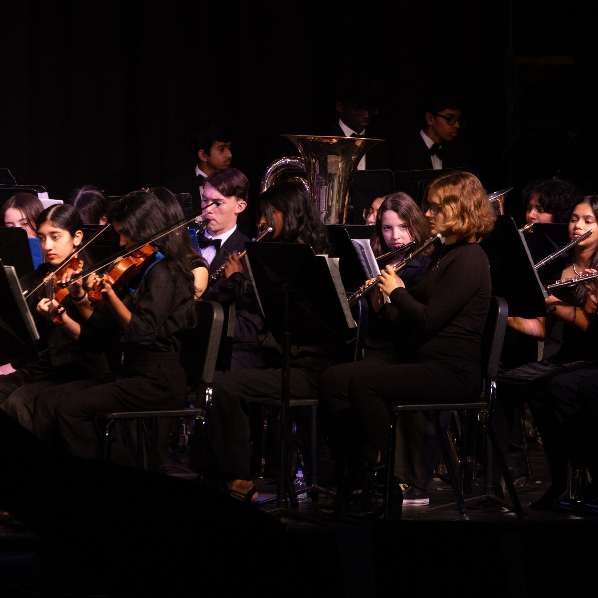
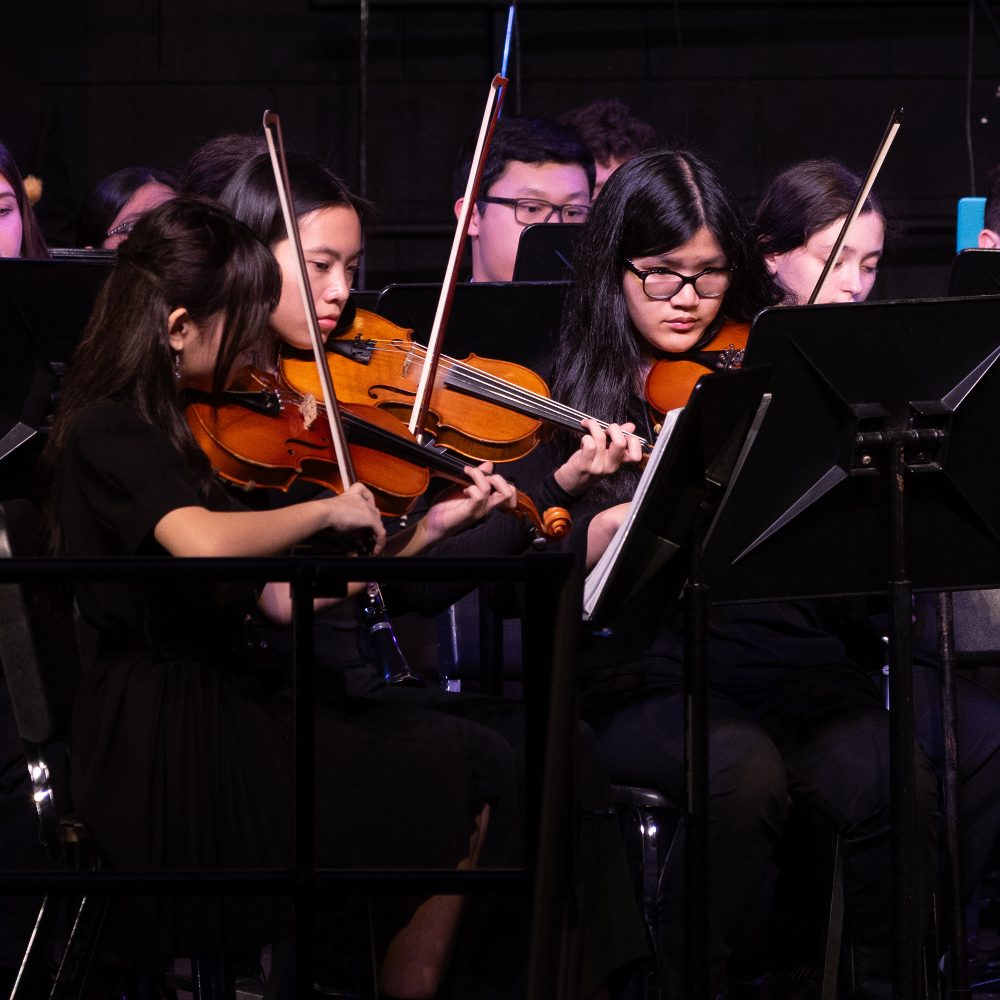
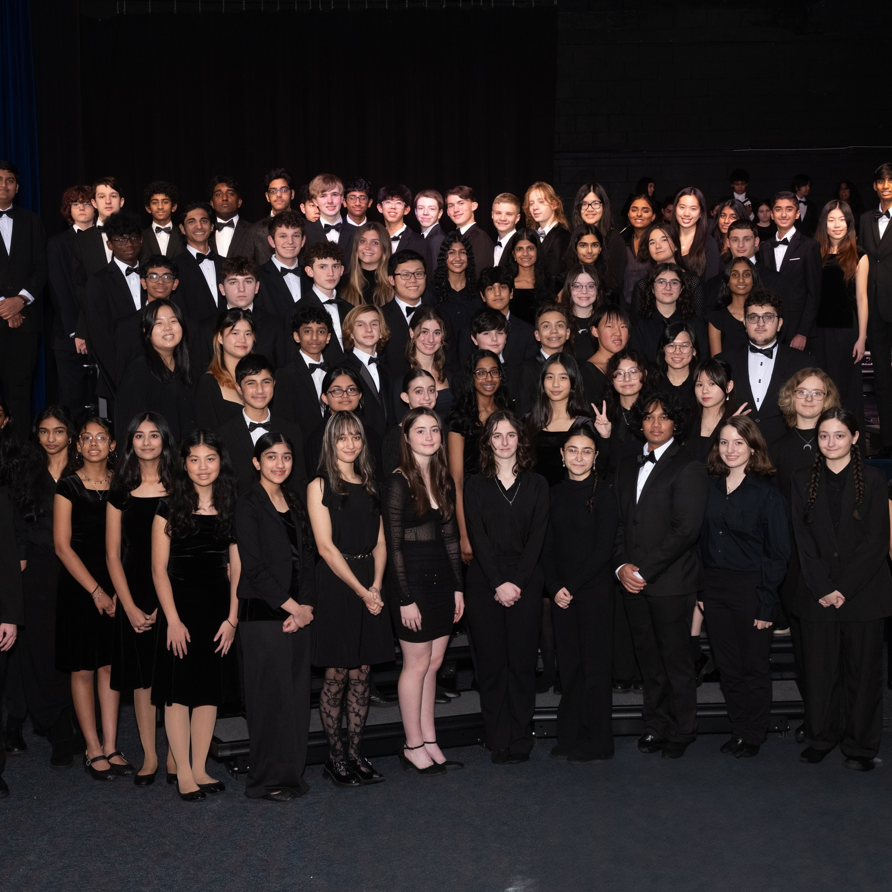
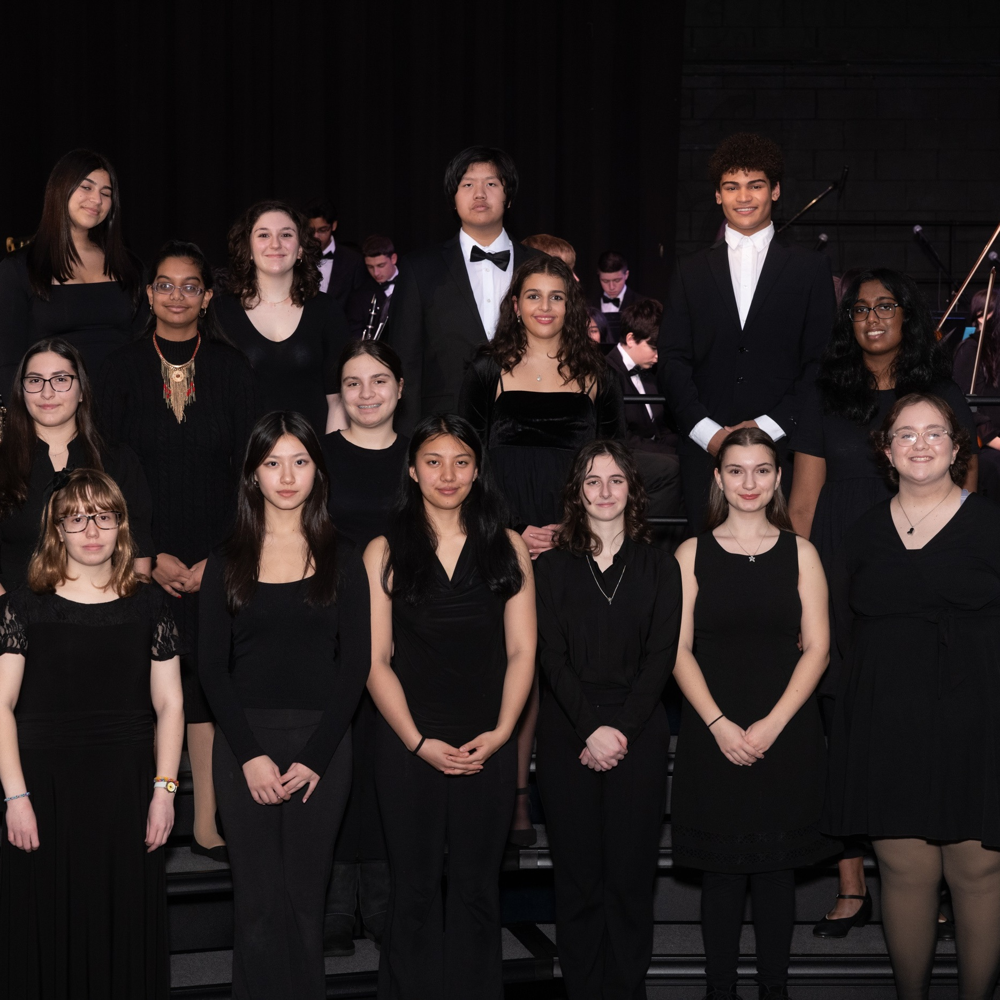
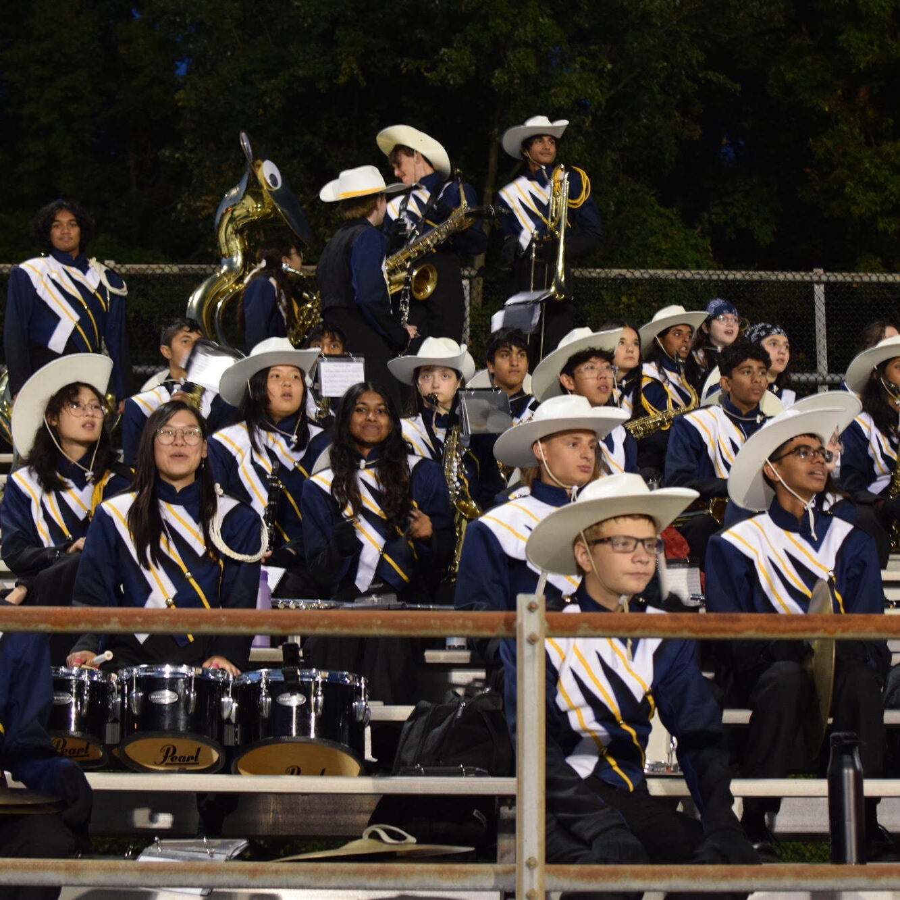
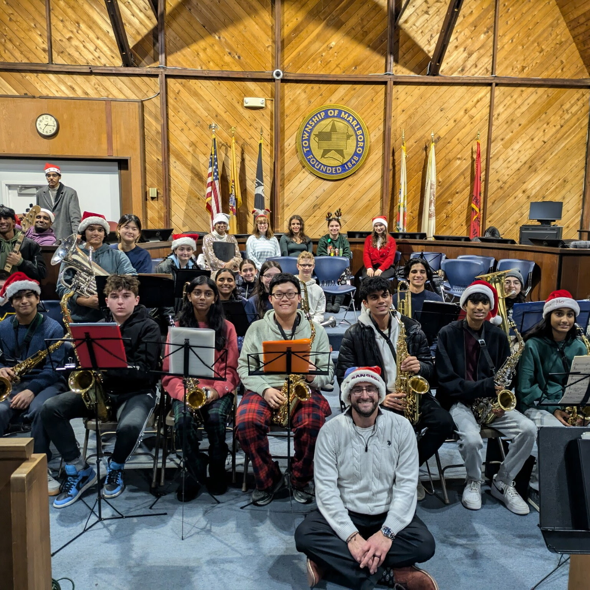
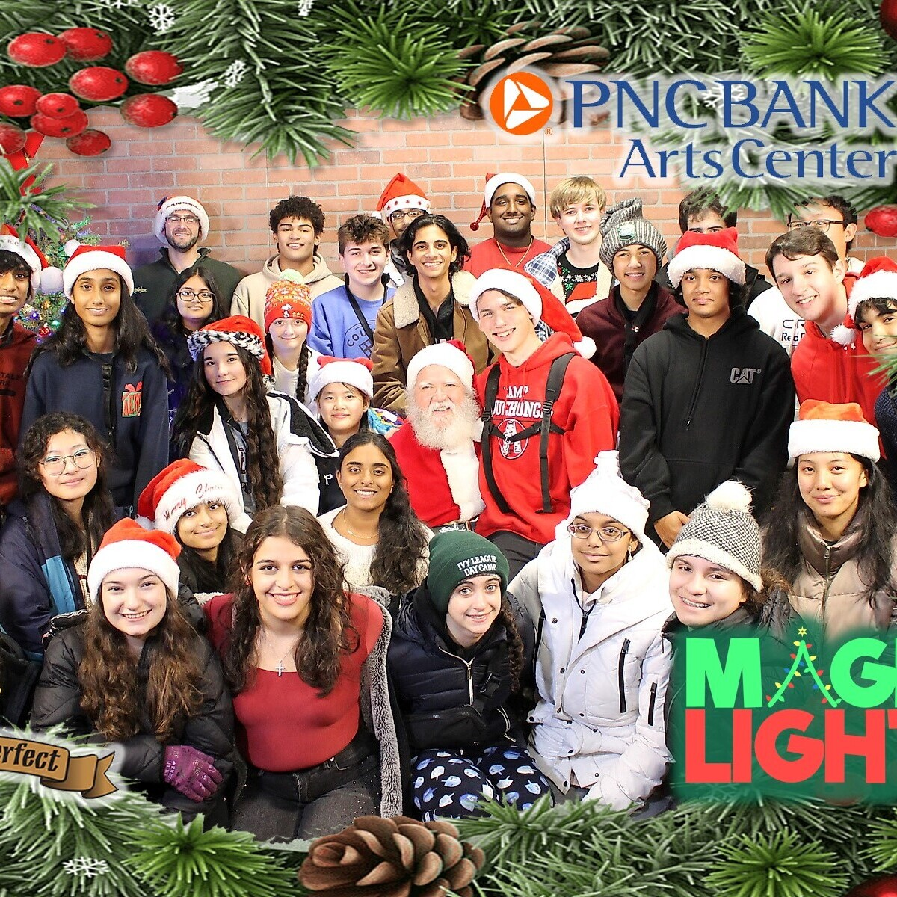
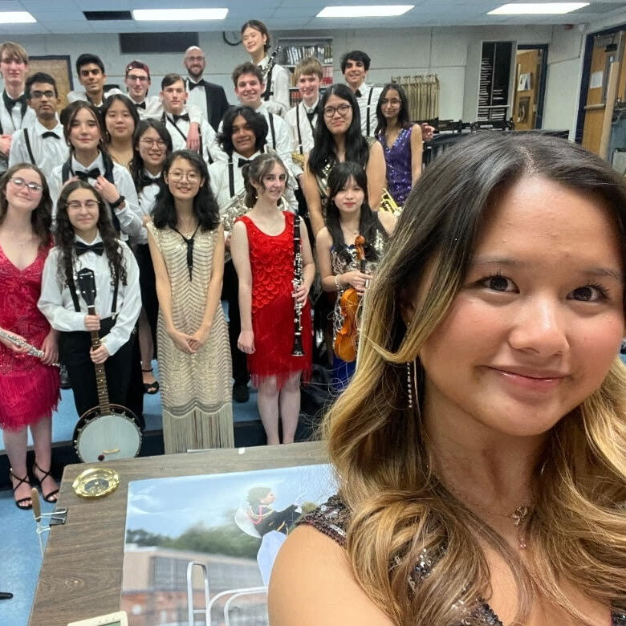
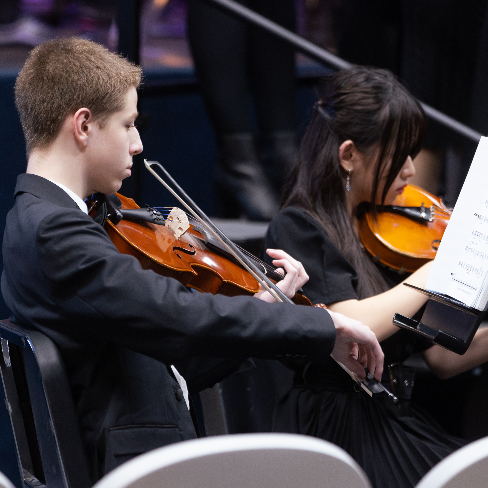
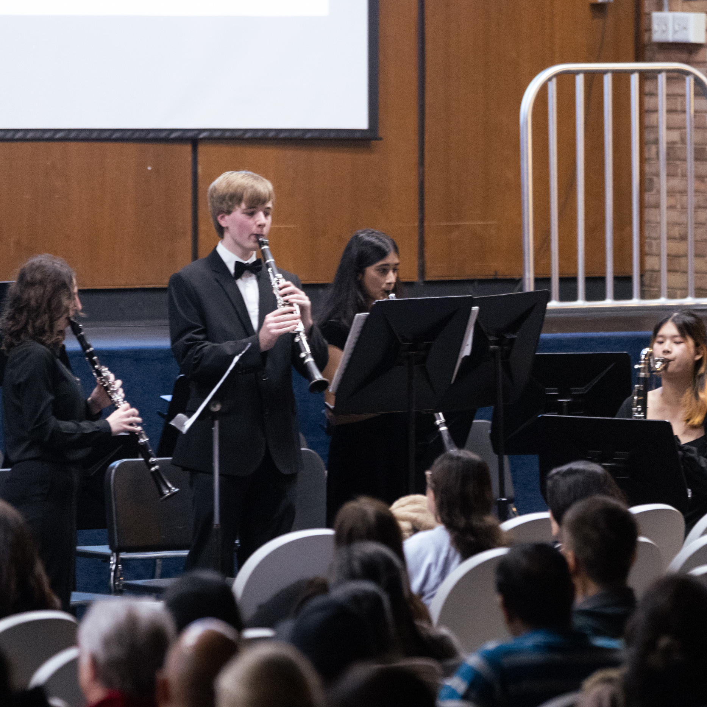

Looking for a specific ensemble? Search below:


This ensemble is comprised of all band instrumentalists. Like the Concert Orchestra, this group has a section class as an elective in which students receive credit for in the category of Visual and Performing Arts. The course is offered in all four years of a student’s enrollment at Marlboro High School. Students can receive honors credit starting on their second year taking the course if they meet the requirements. The Concert Band performs at numerous school and community events like the 9/11 ceremony, National Honor Society Induction Ceremony, Graduation and more. The ensemble performs at three major concert performances throughout the year, a winter concert, March Music in Our Schools Concert, and spring concert. The ensemble rehearses after school once a week and performs with the Concert Orchestra for combined selections. This ensemble is open to any band student regardless of experience level. This is the core band ensemble that students must perform in to participate in any other extracurricular ensemble such as Jazz Band, Wind Ensemble, Pit Orchestra and Marching Band.


This ensemble is comprised of string instrumentalists such as violin, viola, cello and bass. Like the Concert Band, this group has a section class as an elective in which students receive credit for in the category of Visual and Performing Arts. The course is offered in all four years of a student’s enrollment at Marlboro High School. Students can receive honors credit starting on their second year taking the course if they meet the requirements. The Concert Orchestra performs at numerous school and community events like the 9/11 ceremony, National Honor Society Induction Ceremony, Graduation and more. The ensemble performs at three major concert performances throughout the year, a winter concert, March Music in Our Schools Concert, and spring concert. The ensemble rehearses after school once a week and performs with the Concert Band for combined selections. This ensemble is open to any string orchestral player regardless of experience level. This is the core orchestral ensemble that students must perform in to participate in any other extracurricular ensemble such as Jazz Band, Chamber Strings, Pit Orchestra and Marching Band.


This section of vocalists works through various exercises to become an elite singer. Students work on range, expression and balance as an ensemble. The choir also works on various pieces of repertoire. Students will also be able to attend various events, like the district Chorus Festival.
This class exposes students to an array of musical genres. Music history, theory, analysis and expression are just a few concepts of many that students will cover throughout this semester course.

The pride of our school is displayed in the numerous performances of the Marching Mustangs! The marching band meets for several days of band camp in the last weeks of August to prepare for the Fall season of shows. Performances include all football games and various festivals. We are lucky to be supported by Mrs. Reich (as seen on the left) as our assistant band director, in addition to Mr. Ippolito.
Here is the list of our current leadership team:
Here is the list of our current leadership team:
- Head Drum Major - Leah Trezza
- Assistant D.M. - Dylan Thomas
- Student Executive - Chananed Tangchitpiyanond
- Woodwind Capt. - Jacob Groesbeck
- Brass Captain - Nirek Dhage


This is an elite ensemble of musicians who perform various styles of jazz such as big band, swing, bebop, fusion and more. This group is a select group and meets after school from winter through spring.


This is a select group of musicians who perform for the spring musical. This is a group that meets after school for numerous rehearsals to prepare for live shows performed in the spring. Musicianship skills are developed further in this group due to the intensity of Broadway musical repertoire!

